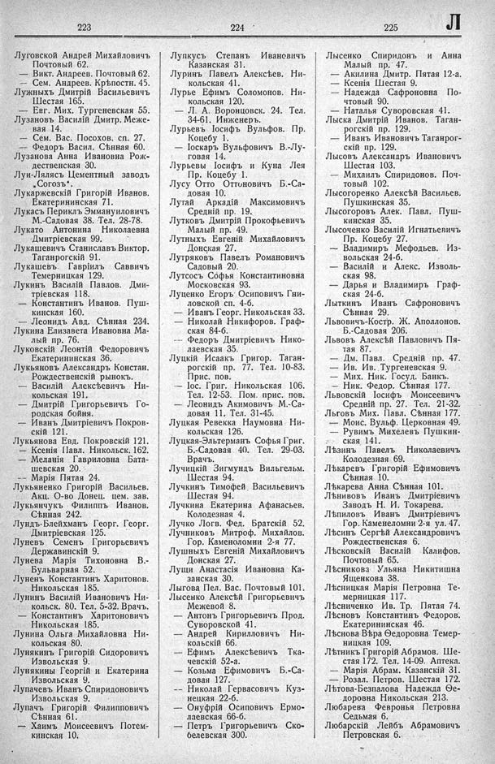

Лист источника 425
Скан

Распознанный текст
223 224 225 Л
Луговской Андрей Михайловичъ
Почтовый 62.
— Викт. Андреев. Почтовый 62.
— Сем. Андреев. Крѣпостн. 45.
Лужныхъ Дмитрій Васильевичъ
Шестая 165.
— Евг. Мих. Тургеневская 55.
Лузановъ Василій Дмитр. Меже-
вая 14.
— Сем. Вас. Посохов. сп. 27.
— Федоръ Васил. Сѣнная 60.
Лузанова Анна Ивановна Рож-
дественская 30.
Луи-Лялясъ Цементный заводъ
„Согозъ“.
Лукаржевскій Григорій Иванов.
Екатерининская 71.
Лукасъ Периклъ Эммануиловичъ
М.-Садовая 38. Тел. 28-78.
Лукато Антонина Николаевна
Дмитріевская 99.
Лукашевичъ Станиславъ Виктор.
Таганрогскій 91.
Лукашевъ Гавріилъ Саввичъ
Темерницкая 129.
Лукинъ Василій Павлов. Дми-
тріевская 118.
— Константинъ Иванов. Пуш-
кинская 160.
— Леонидъ Авд. Сѣнная 234.
Лукина Елизавета Ивановна Ма-
лый пр. 76.
Луковскій Леонтій Федоровичъ
Екатерининская 36.
Лукьяновъ Александръ Констан.
Рождественскій рынокъ.
— Василій Алексѣевичъ Ни-
кольская 191.
— Дмитрій Григорьевичъ Го-
родская бойня.
— Иванъ Дмитріевичъ Покров-
скій 121.
Лукьянова Евд. Покровскій 121.
— Ксенія Павл. Никольск. 162.
— Меланія Гавриловна Бата-
шевская 20.
-- Марія Пятая 24.
Лукьяненко Григорій Васильев.
Акц. О-во Донец. цем. зав.
Лукьянчукъ Филиппъ Иванов.
Сѣнная 242.
Лундъ-Блейхманъ Георг. Георг.
Дмитріевская 125.
Луневъ Семенъ Григорьевичъ
Державинскій 9.
Лунева Марія Тихоновна В.-
Бульварная 52.
Луненъ Константинъ Харитонов.
Никольская 185.
Лунинъ Василій Ивановичъ Ни-
кольск. 80. Тел. 5-32. Врачъ.
— Константинъ Харитоновичъ
Никольская 185.
Лунина Ольга Михайловна Ни-
кольская 80.
Лунякинъ Григорій Сидоровичъ
Извольская 9.
Лунякины Георгій и Екатерина
Извольская 9.
Лупачевъ Иванъ Спиридоновичъ
Извольская 9.
Лупачъ Григорій Филипповичъ
Сѣнная 61.
— Хаимъ Моисеевичъ Потем-
кинская 10.
Лупкусъ Степанъ Ивановичъ
Казанская 31.
Луринъ Павелъ Алексѣев. Ни-
кольская 41.
Лурье Ефимъ Соломонов. Ни-
кольская 120.
— Л. А. Воронцовск. 24. Тел.
34-61. Инженеръ.
Лурьевъ Іосифъ Вульфов. Пр.
Коцебу 1.
— Іоскаръ Вульфовичъ В.-Лу-
говая 14.
Лурьевы Іосифъ и Куна Лея
Пр. Коцебу 1.
Лусу Отто Оттоновичъ Б.-Са-
довая 10.
Лутай Аркадій Максимовичъ
Средній пр. 19.
Лутковъ Дмитрій Прокофьевичъ
Малый пр. 49.
Лутныхъ Евгеній Михайловичъ
Донская 27.
Лутряковъ Павелъ Романовичъ
Садовый 20.
Лутсосъ Софья Константиновна
Московская 93.
Луценко Егоръ Осиповичъ Гни-
ловской сп. 4-б.
— Иванъ Георг. Никольская 33.
— Николай Никифоров. Граф-
ская 84-б.
— Федоръ Дмитріевичъ Нико-
лаевская 35.
Луцкій Исаакъ Григор. Таган-
рогскій пр. 77. Тел. 10-83.
Прис. пов.
— Іос. Григ. Никольская 106.
Тел. 12-53. Пом. прис. пов.
— Леонидъ Акимовичъ М.-Са-
довая 11. Тел. 31-45.
Луцкая Ревекка Наумовна Ни-
кольская 126.
Луцкая-Эльтерманъ Софья Григ.
Б.-Садовая 40. Тел. 29-03.
Врачъ.
Лучицкій Зигмундъ Вильгельм.
Шестая 94.
Лучкинъ Тимофей Васильевичъ
Шестая 94.
Лучкина Екатерина Афанасьев.
Колодезная 4.
Лучко Логв. Фед. Братскій 52.
Лучниковъ Митроф. Михайлов.
Гор. Каменоломни 2-я 77.
Лушныхъ Евгеній Михайловичъ
Донская 27.
Лущи Анастасія Ивановна Ка-
занская 30.
Лыгова Пел. Вас. Почтовый 101.
Лысенко Алексѣй Григорьевичъ
Межевой 8.
— Антонъ Григорьевичъ Прод.
Суворовской 41.
— Андрей Кирилловичъ Ни-
кольскій 66.
— Ефимъ Алексѣевичъ Тка-
чевскій 52-а.
— Козьма Ефимовичъ Б.-Са-
довая 127.
-- Николай Гервасовичъ Куз-
нецкая 22-б.
— Онуфрій Осиповичъ Ермо-
лаевская 66-б.
— Петръ Григорьевичъ Ско-
белевская 300.
Лысенко Спиридонъ и Анна
Малый пр. 47.
— Акилина Дмитр. Пятая 12-а.
— Ксенія Шестая 9.
— Надежда Сафроновна По-
чтовый 90.
— Наталья Суворовская 41.
Лыска Дмитрій Иванов. Таган-
рогскій пр. 129.
— Иванъ Ивановичъ Таганрог-
скій пр. 129.
Лысовъ Александръ Ивановичъ
Шестая 103.
— Михаилъ Спиридонов. Поч-
товый 102.
Лысогоренко Алексѣй Васильев.
Пушкинская 35.
Лысогоровъ Алек. Павл. Пуш-
кинская 35.
Лысоченко Василій Игнатьевичъ
Пр. Коцебу 27.
— Владимиръ Мефодьев. Из-
вольская 24-б.
— Василій и Алекс. Изволь-
ская 98.
— Дарья и Владимиръ Граф-
ская 24-б.
Лыткинъ Иванъ Сафроновичъ
Сѣнная 29.
Львовичъ-Костр. Ж. Аполлонов.
Б.-Садовая 206.
Львовъ Алексѣй Павловичъ Пя-
тая 87.
— Дм. Павл. Средній пр. 47.
— Ив. Ив. Тургеневская 9.
— Мих. Ник. Госуд. Банкъ.
— Ник. Федор. Сѣнная 177.
Львовскій Іосифъ Моисеевичъ
Средній пр. 27. Тел. 21-32.
Льговъ Мих. Павл. Сѣнная 177.
— Моис. Вульф. Церковная 49.
— Рувимъ Михелевъ Пушкин-
ская 141.
Лѣзинъ Павелъ Николаевичъ
Колодезная 69.
Лѣкаревъ Григорій Ефимовичъ
Сѣнная 10.
Лѣкарева Анна Сѣнная 101.
Лѣнивовъ Иванъ Дмитріевичъ
Заводъ Н. И. Токарева.
Лѣпиловъ Иванъ Дмитріевичъ
Гор. Каменеломни 2-я ул. 47.
Лѣсинъ Сергѣй Александровичъ
Рождественская 6.
Лѣсковскій Василій Калифов.
Почтовый 65.
Лѣсникова Ульяна Никитишна
Ященкова 38.
Лѣсницкая Марія Петровна Те-
мерницкая 117.
Лѣсниченко Ив. Тр. Пятая 74.
Лѣсновъ Константинъ Федоров.
Екатерининская 46.
Лѣснова Вѣра Ѳеодоровна Темер-
ницкая 109.
Лѣтникъ Григорій Абрамов. Ше-
стая 172. Тел. 14-09. Аптека.
— Марія Абрам. Казанскій 31.
— Розал. Петров. Шестая 172.
Лѣтова-Безпалова Надежда Ѳе-
доровна Никольская 213.
Любарева Февронья Петровна
Седьмая 6.
Любарскій Лейбъ Абрамовичъ
Петровская 6.